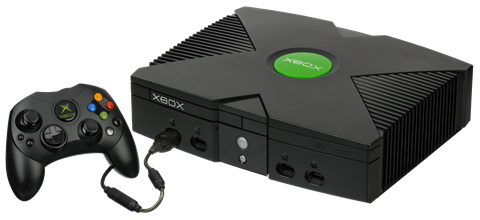
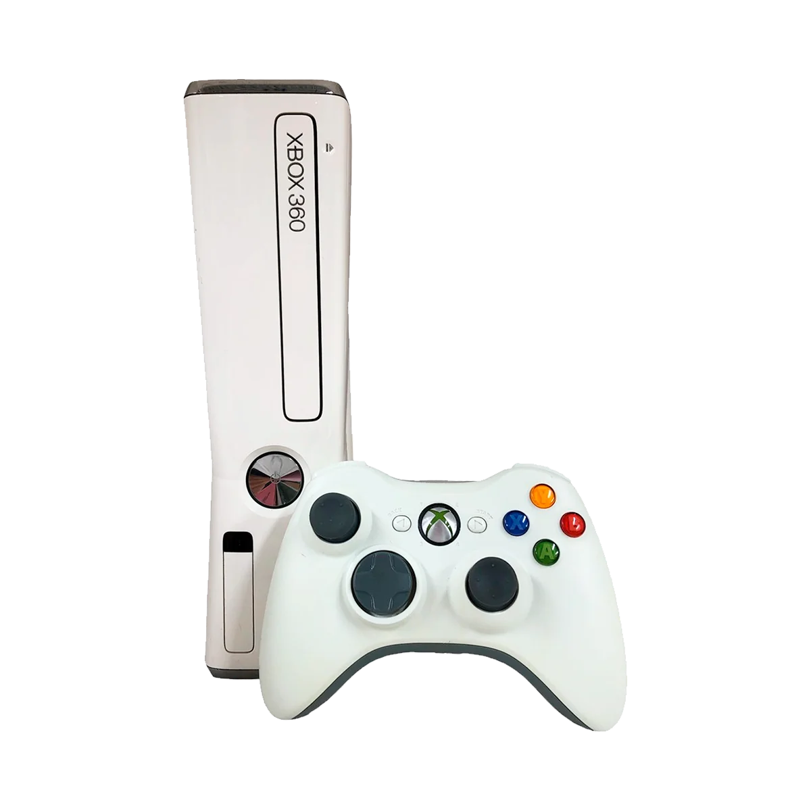
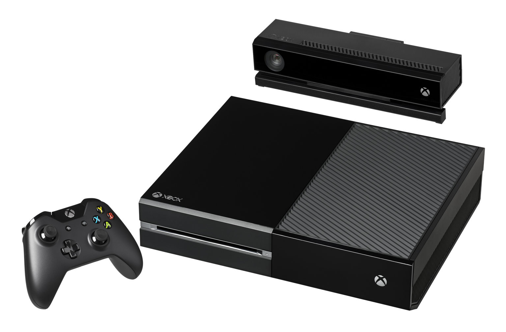
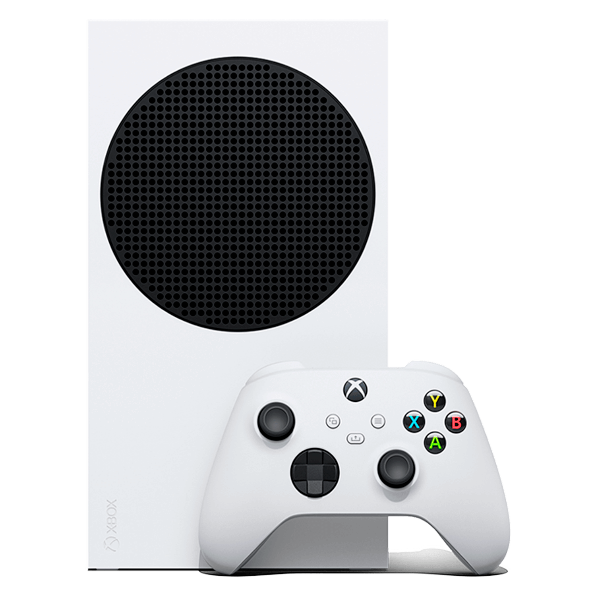

O Xbox, lançado pela Microsoft em novembro de 2001 na América do Norte e posteriormente em outras regiões,
marcou a estreia da empresa no mercado de videogames. Pertencente à sexta geração de consoles...
ler mais

O Xbox 360 é o segundo console desenvolvido pela Microsoft, sucedendo o Xbox. Lançado oficialmente
em maio de 2005 e apresentado na E3 do mesmo ano, o console competiu com o P...
ler mais

O Xbox One é o terceiro console de videogame da Microsoft, sucessor
do Xbox 360, lançado em novembro de 2013 como parte da oitava geração. Competiu
com o P...ler mais

O Xbox Series X foi anunciado oficialmente pela Microsoft durante o The Game Awards 2019,
com lançamento programado para 10 de novembro de 2020. Sucessor do X...ler mais

O Xbox Series X, lançado em novembro de 2020, é o console de próxima geração da Microsoft.
Equipado com uma poderosa CPU e GPU da AMD, oferece gráficos avançados com suporte a ray tracing,
resolução...ler mais
 LOGIN
LOGIN